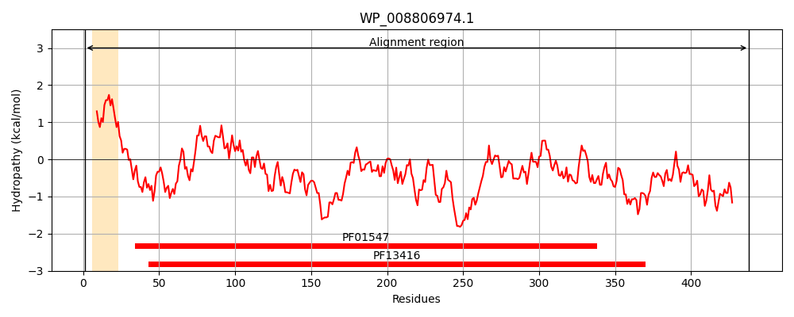
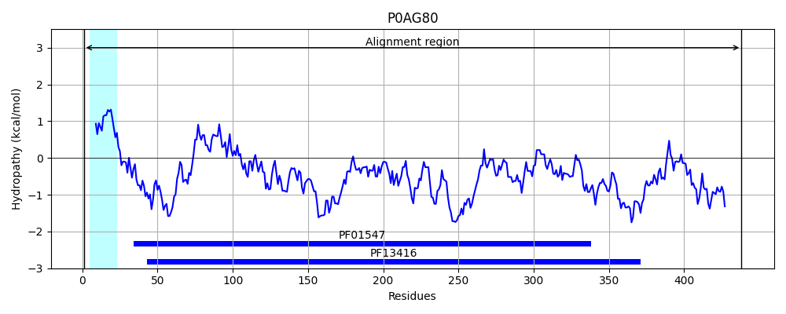
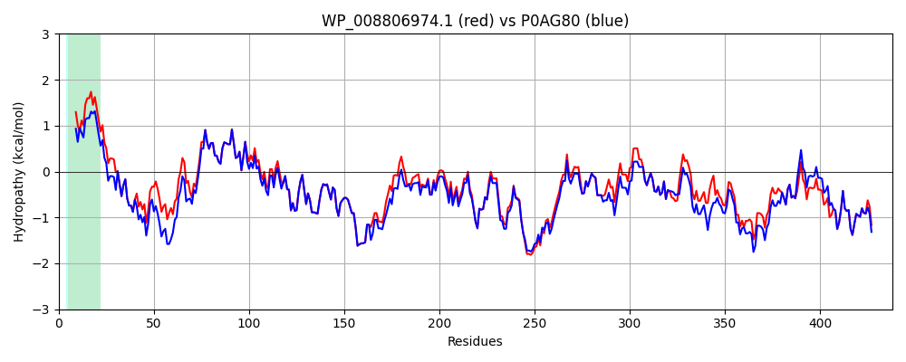

Hit Accession: P0AG80
Hit TCID: 3.A.1.1.3
Hit Description: gnl|BL_ORD_ID|8850 gnl|TC-DB|P0AG80|3.A.1.1.3 sn-glycerol-3-phosphate-binding periplasmic protein ugpB - Escherichia coli.
Mach Len: 438
e:0.000000
Query TMS Count : 1
Hit TMS Count: 1
TMS-Overlap Score: 0.900000
Predicted Substrates:CHEBI:14336;glycerol 1-phosphate
BLAST Alignment:
Score: 2100 , Bit scores: 813 bits, E-value: 0.0e+00, Alignment length: 438, Percentage identity: 90
Query: 1 MISLRHTALGLALSLAFAGQALAVTTIPFWHSMEGELGKEVDSLAQRFNAANPDYKIVPVYKGNYEQSLSAGIAAFRTGNAPAILQVYEVGTATMMASKAIKPVYQVFSEAGIKFDESQFVPTVSGYYTDSKTGHLLSQPFNSSTPVLYYNKDAFKKAGLDPEQPPKTWQDLAAYTAKLKAAGMKCGYASGWQGWIQIENFSAWHGLPVATKNNGFDGTDAVLEFNKPEQVKHIALLEEMNKKGDFSYFGRKDESTEKFYNGDCAITTASSGSLADIRQYAKFNYGVGMMPYDADVKGAPQNAIIGGASLWVMQGKDKETYTGVAKFLDFLTKPEIAAEWHQKTGYLPITTAAYDLTRQQGFYDKNPGADIATRQMLNKPPLPFTKGLRLGNMPQIRTIVDEELESVWTGKKTPQQALDSAVQRGNQLLRRFEQATKS 438
M L +TA LAL LA G A AVTTIPFWHSMEGELGKEVDSLAQRFNA NPDYKIVP YKGNYEQ+LSAGIAAFRTGNAPAILQVYEVGTATMMASKAIKPVY VF EAGI+FDESQFVPTVSGYY+DSKTGHLLSQPFNSSTPVLYYNKDAFKKAGLDPEQPPKTWQDLA Y AKLKA+GMKCGYASGWQGWIQ+ENFSAW+GLP A+KNNGFDGTDAVLEFNKPEQVKHIA+LEEMNKKGDFSY GRKDESTEKFYNGDCA+TTASSGSLA+IR+YAKFNYGVGMMPYDAD K APQNAIIGGASLWVMQGKDKETYTGVAKFLDFL KPE AAEWHQKTGYLPIT AAYDLTR+QGFY+KNPGAD ATRQMLNKPPLPFTKGLRLGNMPQIR IVDEELESVWTGKKTPQQALD+AV+RGNQLLRRFE++TKS
Sbjct: 1 MKPLHYTASALALGLALMGNAQAVTTIPFWHSMEGELGKEVDSLAQRFNAENPDYKIVPTYKGNYEQNLSAGIAAFRTGNAPAILQVYEVGTATMMASKAIKPVYDVFKEAGIQFDESQFVPTVSGYYSDSKTGHLLSQPFNSSTPVLYYNKDAFKKAGLDPEQPPKTWQDLADYAAKLKASGMKCGYASGWQGWIQLENFSAWNGLPFASKNNGFDGTDAVLEFNKPEQVKHIAMLEEMNKKGDFSYVGRKDESTEKFYNGDCAMTTASSGSLANIREYAKFNYGVGMMPYDADAKDAPQNAIIGGASLWVMQGKDKETYTGVAKFLDFLAKPENAAEWHQKTGYLPITKAAYDLTREQGFYEKNPGADTATRQMLNKPPLPFTKGLRLGNMPQIRVIVDEELESVWTGKKTPQQALDTAVERGNQLLRRFEKSTKS 438 | Protein Hydropathy Plots: |
|---|
|  |  |
Pairwise Alignment-Hydropathy Plot:
|
|---|
|  |